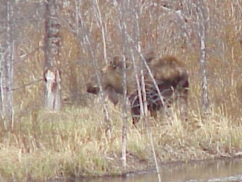
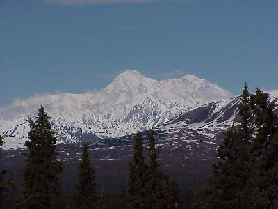

June 4, 5585 miles
| Travel day, back to Anchorage with no sight seeing, other than incidential stuff as we drive along planned. We checked out, grabbed breakfast, and were on the road by about 9:30. | |
| Moose, not the best picture of a moose I ever saw, but a moose none the less. |  |
Mount McKinley They tell us that "only 25% of those that spend 3 days in the Denali area see Mt. McKinley." I guess we can include ourselves in the lucky part of that statistic. On our trip back to Anchorage the mountian "came out," as they say here. We saw many spectacular views in the portions of our travel in which the mountain was visible. |
 |
| Travel day, back to Anchorage to do a
little laundry. On our travels from Denali back to
Anchorage, at a small gas station near Talkneetna (if you
call 15 miles away close) we ran into two of Donald's
cousins, whom he has not seen for ~25 years, both now
reside in Florida. In a quick review of our trip we found
that we were within a few hours, or few miles of each
other numerous times over the past few weeks. To make the
story even stranger, back in Anchorage, we ran into them
again at SAM's Club --- Small World. Wildlife for the day included: moose (1) - sad travel day in comparison to some of our past days, but the leaves are coming out (that's right) and the wildlife is getting harder to see. Other activities for the day included laundry. |
|